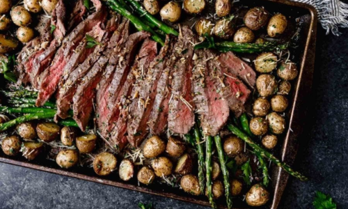

Steak Sheet Pan Dinner
Ingredients
- 2 steaks (such as top sirloin, tr-tip, flank steak, or NY strip)
- 1 lb baby potatoes, halved
- 1 bunch asparagus, trimmed
- 1 cup cherry tomatoes, halved
- 3 cloves garlic, minced
- 2 Tbsp olive oil
- 1 tsp rosemary
- 1 tsp thyme
- Salt and pepper to taste
- 1/4 cup grated Parmesan cheese (optional)
Directions
- Preheat your oven to 400 F.
- On a large sheet pan, toss the baby potatoes with 1 Tbsp olive oil, minced garlic,
rosemary, thyme, salt, and pepper. Spread them out in an even layer and roast for
20 minutes.
- While the potatoes are roasting, season the steaks with salt and pepper.
- After 20 minutes, remove the sheet pan from the oven and push the potatoes to one side.
Add the steaks, asparagus, and cherry tomatoes with the remaining olive oil and season
with salt and pepper.
- Return the sheet pan to the oven and roast for an additinal 15-20 minutes, or until the
steaks reach your desired level of doneness and the vegetables are tender.
- If using, sprinkle the Parmesan cheese over the vegetables during the last 5 minutes of
cooking.
- Let the steaks rest for a few minutes before slicing. Serve everything hot and enjoy!